전자기기기능사 (2012-04-08 기출문제)
1과목: 전기전자공학
1. 다음 중 압전효과를 이용한 발진기는?
- LC 발진기
- RC 발진기
- 블로킹 발진기
- 수정 발진기
(정답률: 77%)

2. 트랜지스터의 전류증폭률 α와 β의 관계는?
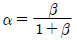
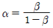
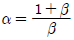
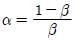
(정답률: 74%)
3. 그림과 같은 구형파 펄스의 충격계수(duty factor) D는?
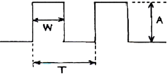
- D = 1/T
- D = W/T
- D = A/T
- D=1/A
(정답률: 76%)
4. 이상적인 연산증폭기에 대한 설명으로 옳지 않은 것은?
- 주파수 대역폭이 무한대이다.
- 출력 임피던스가 무한대이다.
- 입력 바이어스 전류는 0 이다.
- 오픈 루프 전압이득이 무한대이다.
(정답률: 71%)
5. 연산증폭기의 특징에 대한 설명으로 옳지 않은 것은?
- 전압 이득이 크다.
- 입력 임피던스가 높다.
- 출력 임피던스가 낮다.
- 단일 주파수만을 통과시킨다.
(정답률: 73%)
6. 다음 중 부궤한 증폭회로에 대한 설명으로 적합하지 않은 것은?
- 증폭도가 저하된다.
- 안정도가 감소된다.
- 주파수 특성이 개선된다.
- 입ㆍ출력 임피던스가 궤환에 의해 변화된다.
(정답률: 61%)
7. 운동하고 있는 전자에 자장을 가하면 운동방향을 변화시킬 수 있다. 만약 전자의 운동방향이 자장의 운동방향과 직각이면 전자는 무슨 운동을 하는가?
- 수직운동
- 수평운동
- 원운동
- 지그재그운동
(정답률: 65%)
8. 비검파회로에 삽입된 대용량 콘덴서 Co의 목적은?
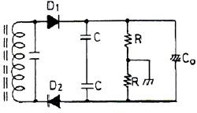
- 결합작용
- 직류차단작용
- 진폭제한작용
- 측로(by pass)
(정답률: 67%)
9. 그림은 연산회로의 일종이다. 출력을 바르게 표시한 것은?
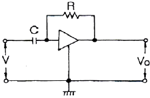
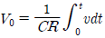
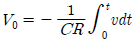
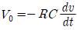
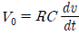
(정답률: 64%)
10. 다음 연산증폭기 회로의 입력전압 V1값으로 옳은 것은? (단, 이상적인 연산증폭기이다.)
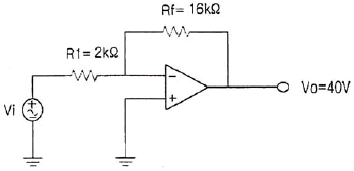
- -5[V]
- 7.5[V]
- -10[V]
- 12.5[V]
(정답률: 53%)
11. 충돌된 1차전자의 운동에너지에 의하여 방출된 자유전자의 명칭으로 바르게 된 것은?
- 열전자
- 광전자
- 2차전자
- 전기장전자
(정답률: 71%)
12. 베이스 접지 트랜지스터 회로에서 입력과 출력 신호 사이의 위상차는?
- 동상
- 90°
- 180°
- 270°
(정답률: 59%)
13. 직류 안정화 전원회로의 기본 구성요소로 가장 적합한 것은?
- 기준부, 비교부, 검출부, 증폭부, 지시부
- 기준부, 비교부, 검출부, 증폭부, 제어부
- 기준부, 발진부, 검출부, 제어부, 증폭부
- 기준부, 지시부, 검출부, 증폭부, 발진부
(정답률: 70%)
14. 정류회로의 직류전압이 300[V]이고 리플 전압이 3[V]였다. 이 회로의 리플률은 몇 [%]인가?
- 1[%]
- 2[%]
- 3[%]
- 5[%]
(정답률: 80%)
15. 이미터 플로어에 대한 설명으로 옳지 않은 것은?
- 입력임피던스는 낮다.
- 전압 증폭도는 대략 1 이다.
- 입 ㆍ 출력 위상은 동위상이다.
- 부하효과를 최소화하는 버퍼증폭기로 많이 사용된다.
(정답률: 50%)
2과목: 전자계산기일반
16. 다음 중 정류 회로의 종류가 아닌 것은?
- 브리지 정류회로
- 반파 정류회로
- 전파 정류회로
- 정전압 정류회로
(정답률: 66%)
17. 주기적으로 재기록하면서 기억 내용을 보존해야 하는 반도체 기억장치는?
- SRAM
- EPROM
- PROM
- DRAM
(정답률: 70%)
18. 컴퓨터와 오퍼레이터 사이에 필요한 정보를 주고 받을 수 있는 장치는?
- 자기디스크
- 라인프린터
- 콘솔
- 데이터 셀
(정답률: 71%)
19. 다음 그림은 어떤 주소 지정 방식인가?
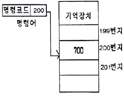
- 즉시주소(Immediate Address) 지정
- 직접주소(Direct Address) 지정
- 간접주소(Indirect Address) 지정
- 상대주소(Relative Address) 지정
(정답률: 63%)
20. 컴퓨터 내부에서 문자를 표현하는 방식은?
- 팩 방식
- 아스키 코드 방식
- 고정 소수점 방식
- 부동 소수점 방식
(정답률: 65%)
21. 16진수 (28C)16를 10진수로 변환한 것으로 옳은 것은?
- 626
- 627
- 628
- 652
(정답률: 63%)
22. 명령어 형식에서 오퍼랜드(operand)부의 역할이라고 할 수 없는 것은?
- 레지스터 지정
- 명령어 종류 지정
- 기억장치의 어드레스 지정
- 데이터 자체의 표현
(정답률: 44%)
23. 프로그래밍에 사용하는 고급언어 중 절차지향언어에 포함되지 않는 것은?
- 코볼(COBOL)
- C언어
- 자바(JAVA)
- 베이직(BASIC)
(정답률: 59%)
24. 다음 논리연산 명령어 중 누산기의 값이 변하지 않는 것은? (단, 여기서 X는 임의의 8bit 데이터이다.)
- CP X
- AND X
- OR X
- EX-OR X
(정답률: 66%)
25. 컴퓨터가 직접 인식하여 실행할 수 있는 언어로서, 2진수 “0” 과 “1” 만을 이용하여 명령어와 데이터를 나타내는 언어는?
- 기계어
- 어셈블리 언어
- 컴파일러 언어
- 인터프리터 언어
(정답률: 85%)
26. 다음 중 “0”에서부터 “9”까지의 10진수를 4비트의 2진수로 표현하는 코드는?
- 아스키 코드
- 3-초과 코드
- 그레이 코드
- BCD 코드
(정답률: 75%)
27. 속도가 빠른 중앙처리장치와 속도가 느린 주기억장치 사이에 위치하며 두 장치간의 속도 차를 줄여 컴퓨터의 전체적인 동작 속도를 빠르게 하는 기억장치는?
- 캐시 메모리(Cache Memory)
- 가상 메모리(Virtual Memory)
- 플래시 메모리(Flash Memory)
- 자기버블 메모리(Magenetic Bubble Memory)
(정답률: 88%)
28. 각 세그먼트를 하나의 프로그램이 되도록 연결하고, 어셈블러가 번역한 목적프로그램을 실행 모듈로 바꾸어 주는 프로그램은?
- 에디터
- ASM
- LINKER
- EXE2BIN
(정답률: 72%)
29. 내부저항이 20[kΩ]인 전압계의 측정 범위를 크게 하려고 80[kΩ]의 배율기를 직렬로 연결했을 때, 전압계의 지시값이 50[V]였다면 측정 전압은?
- 220[V]
- 250[V]
- 280[V]
- 320[V]
(정답률: 54%)
30. 적산전력계의 알루미늄 원판에 유기되는 전류는?
- 여자 전류
- 맴돌이 전류
- 자화 전류
- 최대 전류
(정답률: 76%)
3과목: 전자측정
31. 일반적으로 1[Ω]이하 10-5[Ω]정도의 저저항 정밀측정에 사용되는 브리지는?
- 켈빈더블 브리지
- 휘스톤 브리지
- 콜라우슈 브리지
- 맥스웰 브리지
(정답률: 57%)
32. 표준신호발생기의 필요조건으로 옳지 않은 것은?
- 주파수가 정확하고 가변 파형이 양호할 것
- 변조특성이 좋으며 지시변조도가 정확할 것
- 출력 임피던스가 가변될 것
- 불필요한 출력을 내지 않을 것
(정답률: 78%)
33. 오실로스코프에서 휘도(intensity)를 조정하는 것은?
- 양극전압
- 편향판전압
- 캐소드전압
- 제어그리드전압
(정답률: 56%)
34. 자동평형식 기록계기의 구성요소가 아닌 것은?
- 함수발생기
- 증폭회로
- 서보모터
- DC-AC변환회로
(정답률: 51%)
35. 유도형 계기의 특징에 대한 설명 중 옳지 않은 것은?
- 가동부에 전류를 흘릴 필요가 없으므로 구조가 간단하고, 견고하다.
- 공극이 좁고 자장이 강하므로 외부 자장의 영향이 작고, 구동 토크가 크다.
- 주파수의 영향이 다른 계기에 비하여 크므로 정밀급 계기에는 부적합하다.
- DC 전용 계기로 주로 사용된다.
(정답률: 47%)
36. 저주파 증폭기의 출력 측에서 기본파의 전압이 50[V], 제2고조파의 전압이 4[V], 제3고조파의 전압이 3[V]임을 측정으로 알았다면, 이 때 일그러짐율[%]은?
- 5
- 6
- 8
- 10
(정답률: 50%)
37. 아날로그 계측기와 비교시 디지털 계측기에만 반드시 필요한 것은?
- 비교기
- 증폭기
- A/D 변환기
- D/A 변환기
(정답률: 79%)
38. 다음 중 가장 높은 주파수를 측정할 수 있는 것은?
- 헤테로다인 주파수계
- 공동 주파수계
- 흡수형 주파수계
- 동축 주파수계
(정답률: 53%)
39. 250[V]인 전지의 전압을 어떤 전압계로 측정하여 보정 백분율로 구하였더니 0.2 이었다. 전압계의 지시값은?
- 250.5
- 250.2
- 249.5
- 249.8
(정답률: 55%)
40. 전압 측정 시 계측기에 흐르는 미소 전류에 의한 전압 강하로 발생되는 오차를 줄이는 방법은?
- 계측기의 입력 저항을 크게 한다.
- 미끄럼 줄의 마찰에 의한 저항 변화를 줄인다.
- 전압 분압기로 1[V] 정도 전압을 낮춰 측정한다.
- 계측기에 배율기를 사용하여 측정 범위를 넓힌다.
(정답률: 41%)
41. 캡스턴의 원주속도가 고르지 않을 때 생기는 현상은?
- 험
- 와우플러터
- 모터보팅
- 잡음
(정답률: 55%)
42. 초음파 집진기는 초음파의 어떤 작용을 이용한 것인가?
- 응집작용
- 분산작용
- 확산작용
- 에멀션화작용
(정답률: 72%)
43. 기본파 진폭 20[mA], 제 2고조파 진폭 4[mA]인 고조파 전류의 왜율은 몇 [%] 인가?
- 10
- 20
- 50
- 80
(정답률: 57%)
44. 고주파 가열 중 유전가열에 대한 설명으로 거리가 먼 것은?
- 가열이 골고루 된다.
- 온도 상승이 빠르다.
- 피가열물의 모양에 제한을 받지 않는다.
- 내부가열이므로 표면 손상이 되지 않는다.
(정답률: 64%)
45. 주파수 특성의 표현법과 관계없는 것은?
- 벡터 궤적
- 나이퀴스트 선도
- 보드 선도
- 스칼라 궤적
(정답률: 60%)
4과목: 전자기기 및 음향영상기기
46. 한 조를 이루는 지상국에서 펄스 대신에 연속파를 발사하여 수신 장소에서는 그 위상차를 이용하여 거리차를 알아내는 쌍곡선 항법을 유럽에서 사용했는데 이를 무엇이라고 하는가?
- 데카(decca)
- 로란 A(loran A)
- TACAN(tactical air navigation)
- AN레인지(AN range)
(정답률: 54%)
47. 태양전지에 이용되는 효과는?
- 광기전력 효과
- 광전자 방출효과
- 광증폭 효과
- 펠티어 효과
(정답률: 76%)
48. 직류전동기의 속도제어 방법이 아닌 것은?
- 전압제어법
- 계자제어법
- 주파수제어법
- 저항제어법
(정답률: 57%)
49. 다음 중 잔류편차가 없는 제어 동작은?
- PI 동작
- P 동작
- PD 동작
- ON-OFF 동작
(정답률: 46%)
50. 다음 중 변위를 압력으로 변환하는 변환기는?
- 전자석
- 전자코일
- 유압분사관
- 차동변압기
(정답률: 59%)
51. 슈퍼헤테로다인 수신기에서 중간주파수가 455[kHz] 일 때 710[kHz] 의 전파를 수신하고 있다. 이때 수신될 수 있는 영상 주파수는 몇 [kHz] 인가?
- 910
- 1165
- 1420
- 1620
(정답률: 58%)
52. 출력이 500[W]인 송신기의 공중선에 5[A]의 전류가 흐를 때 복사저항은?
- 10[Ω]
- 20[Ω]
- 30[Ω]
- 40[Ω]
(정답률: 59%)
53. 서보 기구에 관한 일반적인 설명 중 옳지 않은 것은?
- 조작력이 강해야 한다.
- 서보 기구에서는 추종속도가 느려야 한다.
- 유압 서보 모터나 전기적 서보 모터가 사용된다.
- 전기식이면 증폭부에 전자관 증폭기나 자기증폭기가 사용된다.
(정답률: 75%)
54. 초음파 탐상기의 주요 구성요소가 아닌 것은?
- 수신부
- 송신부
- 동기부
- 자동방향 탐지부
(정답률: 59%)
55. 항공기가 강하할 때 수직면 내에 올바른 코스를 지시하는 것으로 90[Hz] 및 150[Hz]로 변조된 두 전파에 의해 표시되는 착륙 보조장치는?
- PAR
- 팬마커
- 글라이드 패드
- 지상 제어 진입장치
(정답률: 70%)
56. 다음 중 화상의 질을 판단하기 위한 시험도형으로 일반적으로 사용되는 것은?
- 고스트
- 비월주사
- 순차주사
- 테스트패턴
(정답률: 64%)
57. 슈퍼헤테로다인 수신기에서 중간 주파 증폭을 하는 이유중 옳지 않은 것은?
- 전압 변동을 적게 하기 위해
- 선택도를 높이기 위해
- 충실도를 높이기 위해
- 안정한 증폭으로 이득을 높이기 위해
(정답률: 41%)
58. VTR에서 테이프 구동기구인 로딩 기구(loading mechanism)에 대한 설명으로 옳은 것은?
- 헤드 드럼에서 테이프를 끌어내어 핀치 롤러에 세트 하는 기구이다.
- 비디오 카세트에서 테이프를 끌어내어 헤드 드럼에 세트 하는 기구이다.
- 빨리 보내기(FF), 되돌리기(REW) 시에 테이프가 비디오 헤드에 세트 하는 기구이다.
- 빨리 보내기(FF), 되돌리기(REW) 시에 테이프가 헤드 드럼과 접촉하게 하는 기구이다.
(정답률: 49%)
59. 다음 중 태양전지에 대한 설명으로 옳지 않은 것은?
- 축전장치가 필요하다.
- 장치가 간단하고 보수가 편하다.
- 대전력용은 부피가 크고, 가격이 비싸다.
- 빛의 방향에 따라 발생 출력이 변하지 않는다.
(정답률: 68%)
60. TV 수상기의 영상 증폭회로에서 피킹 코일에 관한 설명으로 옳은 것은?
- 수직의 동기를 제어한다.
- 고역주파수 특성을 보상한다.
- 저역주파수 특성을 보상한다.
- 4.5[MHz]의 음성신호를 제거한다.
(정답률: 61%)